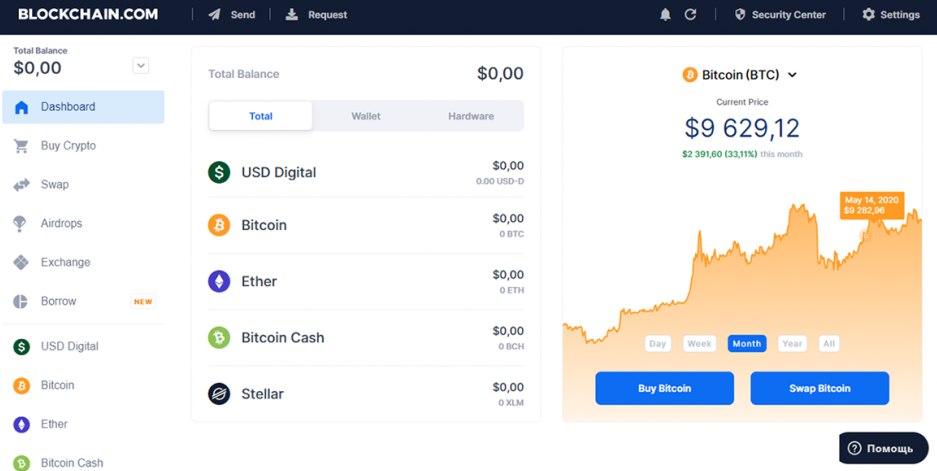
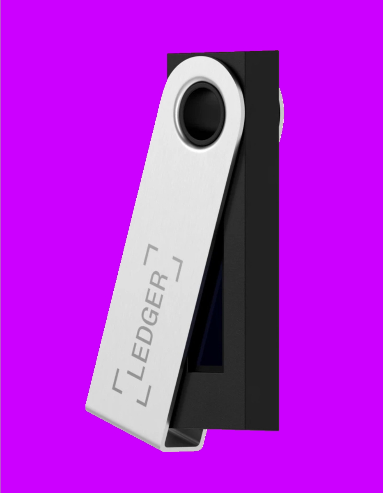

ETH-2955,87$ BITCOIN-39 594,70$ USD/RUB-77,38 руб. JPY/RUB-0,60 руб. GBP/RUB-99,35 руб. EUR/RUB-83,82
Десктопный кошелек
Сложный, но безопасный. Даже если этот способ вам не подойдет, вы поймете фундаментальный принцип работы криптовалюты. Чтобы завести десктопный кошелек, вам понадобится не обычный жесткий диск, а SSD. Дело в том, что придется скачать всю историю транзакций по конкретной криптовалюте. Для примера возьмем самую первую, относительно не волатильную, — биткоин. Заходите на сайт bitcoin.org и скачивайте Bitcoin core: На сайте можно выбрать множество кошельков. Все они отличаются безопасностью, уровнем владения и удобством использования. Bitcoin core — он же ядро биткоина — самый первый и объемный кошелек, который можно установить. Путь к установке — диск SSD. Нужно скачать буквально всю историю сделок с биткоинами, которые происходили в мире. Раньше, когда он только появился, записи за год весили менее одного гб. Из-за колебаний курса, вовлечения пользователей, создания бирж, появления ботов транзакций стало много (практически 1000 гб). Без SSD (быстрого диска) вы будете загружать информацию n лет, и дело не в скорости интернета. К счастью, SSD на 1000 гб не нужен. В настройках можно обозначить, чтобы на каждые 4-5 гб перезаписывались новые 4-5 гб. Bitcoin core пробежится по цепочке, но объема не создаст. Данные будут весить 4-5 гб. Нужно как бы вспомнить прошлые операции, чтобы начать следующую. Использовать кошелек можно после загрузки последней транзакции на текущую дату. Где же сам кошелек?
Он находится в папке, которая называется wallet.dat: Он был создан автоматически, у него появился адрес. То есть на этот адрес можно принимать и отправлять. Если все-таки Bitcoin core не находит wallet.dat, он создает новый. Кстати, можно просто изменить название файла — и у вас появится новый wallet.dat с новым адресом. Основной кайф заключается в том, что любое количество биткоинов с кошелька можно перенести куда угодно: на флешку, на другой компьютер, хоть по почте отправить. Когда вы откроете wallet.dat в новом месте, там будет счет с вашими биткоинами. Хотя по почте я бы отправлять не стал: всякое может быть. Но можно защитить себя, поставив на кошелек пароль. Это не совет — требование! Кошелек должен быть под паролем в 20+ символов на разных языках, с разным регистром и желательно со специальными символами. Идеальный пароль выглядит так: SjTПРF”.fgto47п65оге/rkcid75 Если вы потеряли пароль, вы потеряли деньги. Поддержки нет, звонить некому. Итак, что вам понадобится: 1.SDD диск 2. Bitcoin core 3. Загруженные транзакции 4.wallet.dat
Онлайн-кошелек
Простой и небезопасный. Если вы уже проходили регистрацию на каком-нибудь сайте, вы знаете этот способ. Идея такая, что все услуги по хранению крипты берет на себя сервис. С вас он возьмет только комиссию за транзакцию. Находите любой сервис, регистрируетесь — и все, у вас есть адрес с кошельком. В чем же подводный камень? В первом способе ваш кошелек принадлежал только вам. А здесь он принадлежит сервису, а вы им управляете. Если сервис взломают или владелец площадки решит “уехать в закат”, сообщить некому, технической поддержки нет.
Расскажу одну ситуацию, когда из онлайн-кошелька увели 400 000 USD. Представители отреагировали: “Это горячий кошелек и подходит для малых сумм”. Онлайн-кошелек — это оптимальный баланс между защитой и удобством использования. Для более крупных сумм нужно использовать холодные и аппаратные кошельки. Онлайн-кошельки предназначены для торговли, для быстрого доступа, но не для хранения. Сюда же относятся биржи. Рекомендую перед выбором биржи гуглить название и добавлять слово “взломана”, например, “битфинекс взломана”: На основании нужно принимать решение. Следует помнить, что здесь вы не владеете кошельком — у вас есть доступ к кошелькам сервиса. В англоязычном реддите даже поговорка есть: “Не твои ключи — не твои биткоины”.
Аппаратный кошелек
Удобный, безопасный, но платный. Речь идет о физическом носителе (например, ledger). Грубо говоря, вся сложность первого метода реализована в коробочке, которая может быть похожа на флешку. Безопасность в данном случае получше: на двух уровнях. Во-первых, никакая транзакция без ПИН-кода на самом устройстве не пройдет. То есть для осуществления манипуляций по отправке нужно физическое подключение “флешки” и пальцы, которые наберут код. Во-вторых, владелец сам хранит приватный ключ (только офлайн!). При активации генерируется случайный набор символов или слов, который подтверждает право владения кошельком. Почему это удобно? Он похож на онлайн-кошелек. Нужно пройти процедуру активации, узнать приватный ключ, задать ПИН-код — и вперед. Все ваши активы будут храниться на этой флешке. Если флешку потеряете, ничего страшного. Можно купить новую и вписать свой приватный ключ — ваши активы снова станут доступны. Именно из этих соображений — во избежание хакерских манипуляций — приватный ключ нельзя класть в интернет или в облачное хранилище.
